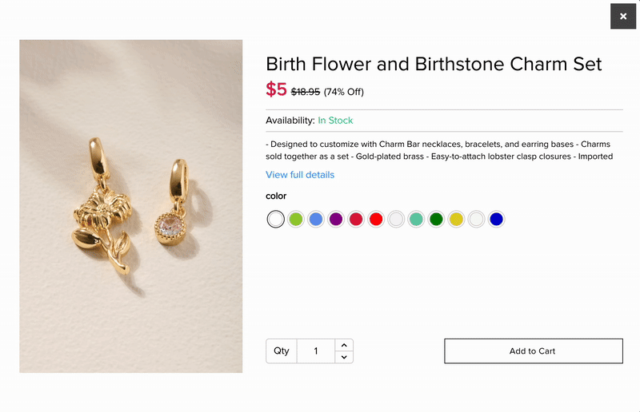
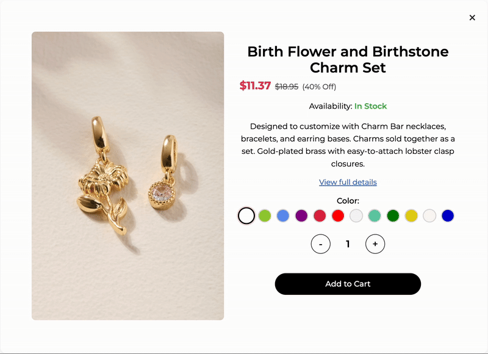

Overview
Francesca's came to this project with a quickview modal that functioned, but lacked the polish, brand expression, and interaction clarity that modern ecommerce shoppers expect. The microinteractions - across the add to cart button, color selector, quantity selector, image hover, and close button - were minimal, unbranded, and provided little feedback during crucial shopping moments. Users could complete tasks, but the overall experience felt static and unengaging, which weakened the emotional connection to the brand.
The redesigned quickview modal delivers a fully refreshed interaction layer grounded in Francesca's feminine, playful visual identity. Each interactive element now communicates clear affordances, smooth transitions, and meaningful feedback. Subtle animations, refined hover states, and branded color accents guide the shopper through exploration and purchase actions more intuitively. The new interactions don't just look better - they actively support confidence, clarity, and conversion.
Context & Challenge
Francesca's quickview modal is a very significant component used across its ecommerce site, allowing shoppers to explore product details without disrupting their browsing flow. The original quickview included basic functionality but lacked the level of detail, motion, and feedback that users subconsciously rely on to understand state changes and feel confident while shopping.
The absence of microinteractions caused friction in several areas. Users couldn't immediately tell if hover states were active. Color selection buttons looked static and undifferentiated. The quantity selector provided no visual indication that it had changed besides the number itself. Product images did nothing on hover, limiting inspection. Even the close button blended in too much, making the exit action unintuitive. These small gaps contributed to a less engaging and less trustworthy interaction moment.
Over the course of this solo three-month project, the goal of the redesign was to infuse the quickview with a level of motion and branded delight that made the experience feel polished, expressive, and intuitive. This included refining every microinteraction inside the modal - hover states, click states, animation transitions, and loading feedback - while ensuring the interface still felt lightweight and seamless to use.
Process & Insight
The project began with a close evaluation of the existing quickview modal and a quick competitive analysis of microinteraction patterns across other fashion ecommerce sites. The findings highlighted a common theme: shoppers rely on subtle motion cues to validate their actions, interpret system state, and feel immersed in the brand experience. Francesca's static UI elements lacked these cues, leaving many interactions feeling incomplete or uncertain.
From there, the design process focused on developing microinteractions grounded in the four components of interaction design: triggers, rules, feedback, and loops/modes. I mapped out every relevant interaction within the modal - add to cart, quantity adjustment, color selection, image engagement, and modal closure - and documented the ideal behavioral flow for each.
To get a sense of the brand personality, I created a style guide outlining the typefaces and colors I needed to utilize in my final design. Although this step was simple, it made the design and development process much quicker since I had all of my assets in one place.

The design exploration involved layout organization, motion studies, and testing to strike the right balance between delight and usability. I tested several animation speeds, easing curves, shadow treatments, and color applications to ensure every motion felt consistent with Francesca's soft, feminine brand palette. The testing phase allowed me to validate timing decisions and ensure transitions were fast enough to be functional but smooth enough to feel premium.
User feedback with other peers and Francesca's users during testing confirmed that small but intentional motion cues significantly improved clarity and discoverability. Users were more confident when adding items to their cart. They noticed and used the color selector more often. They appreciated the ability to zoom in on product details. Even the close button became easier to find and interact with. These insights reinforced the importance of branded microinteractions as both aesthetic and functional tools.
The Solution
The final quickview modal introduces a suite of polished, highly responsive microinteractions that elevate the shopping experience while remaining true to Francesca's brand personality.
"Add to Cart" button
The Add to Cart button now includes a refined hover state with a soft beige background, light pink border, and a subtle shadow that reinforces interactivity. On click, users see an “Adding…” state with a spinner and a shimmering diagonal line animation that signals progress, followed by a satisfying “Added!” moment with a pop animation, checkmark, and light pink confirmation color. This sequence adds clarity, reassurance, and a small moment of delight tied directly to task completion.

Quantity Selector
The quantity selector received one of the most significant improvements. The new hover state aligns with the button's theme, but the true enhancement lies in its branded number-transition interaction. When increasing quantity, the next number drops smoothly from above, fading into place; when decreasing, the previous number rises from below. This flowing motion makes quantity changes noticeable, intuitive, and visually interesting without adding cognitive load.
Image of Product
The product image now supports a 180px magnifying lens that fades in on hover and tracks the cursor, allowing users to see fine product details without navigating away. This brings the quickview closer to the functionality of a full PDP while preserving the original browsing flow.

"Color Selection" buttons
The color selection buttons now provide a stronger visual hierarchy and a clearer relationship to the product. Hovering expands the button and increases the border thickness for better visibility. Clicking a color enlarges it further and applies a soft pink border, while the product image fades into the corresponding color variant. This creates a tangible connection between selection and outcome.

"Close" button
Finally, the close button was redesigned to be more discoverable and expressive. Hovering triggers a red color transition and a 180-degree rotation, giving the action a playful but clear signal. On click, the modal closes and returns the user to their original scroll position.

Together, these microinteractions create a cohesive interaction ecosystem that feels alive, branded, and helpful - enhancing usability while building a stronger emotional experience.
The Results
The redesigned quickview modal delivers a noticeably elevated experience by combining motion, clarity, and brand expression in equal measure. Users now receive continuous feedback throughout their shopping flow, reducing uncertainty and improving efficiency. Early usability testing showed that shoppers were more confident when adding items to their cart, engaged more with the color selector, and appreciated the additional detail provided by the hover zoom feature.
Although formal analytics were not part of this project's scope, the updated microinteractions directly address the initial goals of increasing clarity, reducing hesitation, and strengthening brand cohesion within the quickview modal. The project also highlighted the value of intentional microinteractions as both functional and emotional design tools - pushing the Francesca's ecommerce experience closer to the level of polish users expect from modern retail platforms.
In future iterations, continued testing can further refine animation timing, introduce personalized motion preferences, and explore opportunities for applying these microinteraction patterns across the broader site. For now, the new quickview modal stands as a more intuitive, branded, and delightful interaction touchpoint that supports both user needs and business goals.